156
UNIDADE 5 - Frações e porcentagem
Cubo D´Água em Pequim, China, 2019.
A China é uma nação da Ásia Oriental com pradarias, desertos, montanhas, lagos, rios e praias. A capital Pequim combina a arquitetura moderna com locais históricos. Construções como o Cubo D´Água e o estádio Nacional de Pequim, também conhecido como Ninho de Pássaro, impressionam os visitantes.
A China é o país mais populoso do mundo e uma das nações que mais cresce. Veja a seguir algumas curiosidades desse país que é referência mundial nos esportes.
► Na China há um controle de natalidade imposto pelo governo, no qual cada casal pode ter somente um filho. Isso resultou numa geração com aproximadamente 90 milhões de chineses sem irmãos.
► Quanto ao sexo, nascem 119 meninos para 100 meninas.
► Estimativas revelam que no ano de 2020 pelo menos 30 milhões de homens ficaram solteiros.
► Cerca de 45% das chinesas afirmam que valorizam a carreira profissional e não trocam por um casamento.
► Cerca de das famílias chinesas possui um dos avós vivendo junto.
157

CONVERSE
1. Em sua opinião, por que a China é uma referência nos esportes?
2. Ao apresentar as curiosidades sobre a China, temos no texto alguns números que não são naturais. Que números são esses?
3. O que significa dizer “Cerca de das famílias chinesas possui um dos avós vivendo junto”?
4. O que significa dizer “Cerca de 45%das chinesas afirmam que valorizam a carreira profissional e não trocam por um casamento”?
158
CAPÍTULO 1 - Conceito de frações
Números fracionários
Para melhor entender o conceito de fração, usaremos um quebra-cabeça milenar chamado Tangram.
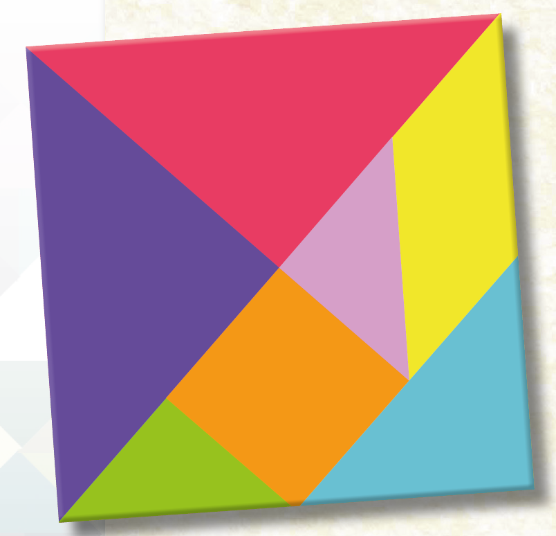A origem e o significado da palavra Tangram possuem muitas versões. Uma delas é a seguinte: gram significa algo desenhado ou escrito como um diagrama. Já a origem da primeira parte: tam é muito duvidosa e especulativa, existindo várias tentativas de explicação. A mais aceita está relacionada à dinastia T'ang (618-906), que foi uma das mais poderosas e longas dinastias da história chinesa, a tal ponto que em certos dialetos do sul da China a palavra T′ang é sinônimo de “chinês”.
Outra versão está ligada à palavra chinesa Tchi Tchiao Pan, cuja tradução seria “Sete peças da sabedoria”, o que nos faz crer que o seu criador tivesse o propósito religioso ou místico ao empregar as sete peças para descrever o mundo. Porém, não existem registros históricos que comprovem estas relações.
[...]
159
UNIDADE 5 - CAPÍTULO 1
1. Vamos construir um Tangram e um quadrado para entender melhor as relações que existem entre as sete peças? Para isso, siga as orientações abaixo.

1º passo: utilizando duas folhas de papel, construa dois quadrados do mesmo tamanho.
![Sequência de 6 figuras, três em cima e três embaixo. Da esquerda para a direita: Figura 1: mãos lado a lado de uma folha de papel em branco na vertical. Figura 2: mãos dobram a folha na diagonal, da esquerda para a direita, formando um triângulo. Figura 3: A folha é desdobrada. A região dobrada está tracejada. Figura 4: Na base da folha, um retângulo na vertical é dobrado. Figura 5: A folha é novamente desdobrada. A região dobrada está tracejada. Uma tesoura corta o retângulo da vertical, na parte debaixo da folha. Figura 6: Duas partes da folha. Uma é a folha de papel recortada. A outra é o que restou da folha: a parte de cima no formato de um quadrado com tracejado na diagonal](../../resources/images/pg159-p1-im1.png)
![Sequência de 6 figuras, três em cima e três embaixo. Da esquerda para a direita: Figura 1: mãos lado a lado de uma folha de papel em branco na vertical. Figura 2: mãos dobram a folha na diagonal, da esquerda para a direita, formando um triângulo. Figura 3: A folha é desdobrada. A região dobrada está tracejada. Figura 4: Na base da folha, um retângulo na vertical é dobrado. Figura 5: A folha é novamente desdobrada. A região dobrada está tracejada. Uma tesoura corta o retângulo da vertical, na parte debaixo da folha. Figura 6: Duas partes da folha. Uma é a folha de papel recortada. A outra é o que restou da folha: a parte de cima no formato de um quadrado com tracejado na diagonal](../../resources/images/pg159-p1-im2.png)
2º passo: separe um dos quadrados que você construiu e recorte o outro, trans-formando-o em dois triângulos.
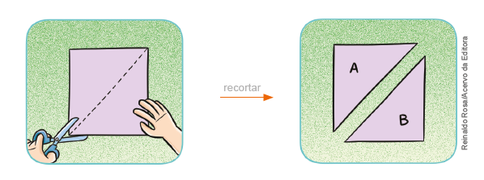3º passo: pegue o triângulo A e divida-o em dois triângulos retângulos e isósceles, que serão as peças 1 e 2. Anote, em cada peça, seu respectivo número.
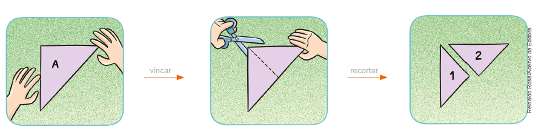160
4º passo: pegue o triângulo B e marque o ponto que indica a metade da medida do lado maior, conforme a ilustração. Dobre a ponta do triângulo que forma o ângulo reto até o ponto encontrado anteriormente. Recorte o triângulo retângulo menor e escreva o número 3 nessa peça. Em seguida, divida o trapézio em dois trapézios menores, decompondo um deles em um quadrado e um triângulo retângulo isósceles. Numere as peças que você encontrou, como mostra a ilustração.
![Sequência de 6 figuras, três em cima e três embaixo. Da esquerda para a direita: Figura 1: mãos lado a lado de uma folha de papel em branco na vertical. Figura 2: mãos dobram a folha na diagonal, da esquerda para a direita, formando um triângulo. Figura 3: A folha é desdobrada. A região dobrada está tracejada. Figura 4: Na base da folha, um retângulo na vertical é dobrado. Figura 5: A folha é novamente desdobrada. A região dobrada está tracejada. Uma tesoura corta o retângulo da vertical, na parte debaixo da folha. Figura 6: Duas partes da folha. Uma é a folha de papel recortada. A outra é o que restou da folha: a parte de cima no formato de um quadrado com tracejado na diagonal](../../resources/images/pg159-p4-im1.png)
![Sequência de 6 figuras, três em cima e três embaixo. Da esquerda para a direita: Figura 1: mãos lado a lado de uma folha de papel em branco na vertical. Figura 2: mãos dobram a folha na diagonal, da esquerda para a direita, formando um triângulo. Figura 3: A folha é desdobrada. A região dobrada está tracejada. Figura 4: Na base da folha, um retângulo na vertical é dobrado. Figura 5: A folha é novamente desdobrada. A região dobrada está tracejada. Uma tesoura corta o retângulo da vertical, na parte debaixo da folha. Figura 6: Duas partes da folha. Uma é a folha de papel recortada. A outra é o que restou da folha: a parte de cima no formato de um quadrado com tracejado na diagonal](../../resources/images/pg159-p4-im2.png)
5º passo: utilizando a outra peça no formato de trapézio, encontre as duas úl-timas peças que compõem o Tangram: um triângulo retângulo isósceles e um paralelogramo, conforme a ilustração. Numere as peças 6 e 7.
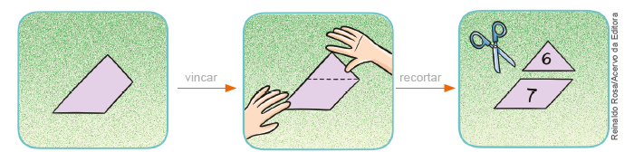6° passo: com as peças que você encontrou, monte o Tangram representado ao lado do quadrado abaixo. Utilizando cores diferentes, você poderá pintar as peças do seu Tangram e o quadrado.
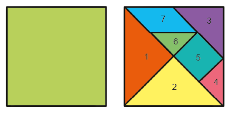161
2. Agora, utilizando o Tangram, responda com seu colega às questões a seguir.
Depois, registrem-nas em seus cadernos.
a) Quantas vezes a peça 1 cabe no outro quadrado que você construiu?
b) A peça 1 representa qual parte do quadrado maior?
c) Quantas vezes a peça 3 cabe no outro quadrado que você construiu?
d) A peça 3 representa qual parte do quadrado maior?
e) Quantas vezes a peça 4 cabe no outro quadrado que você construiu?
f) A peça 4 representa qual parte do quadrado maior?
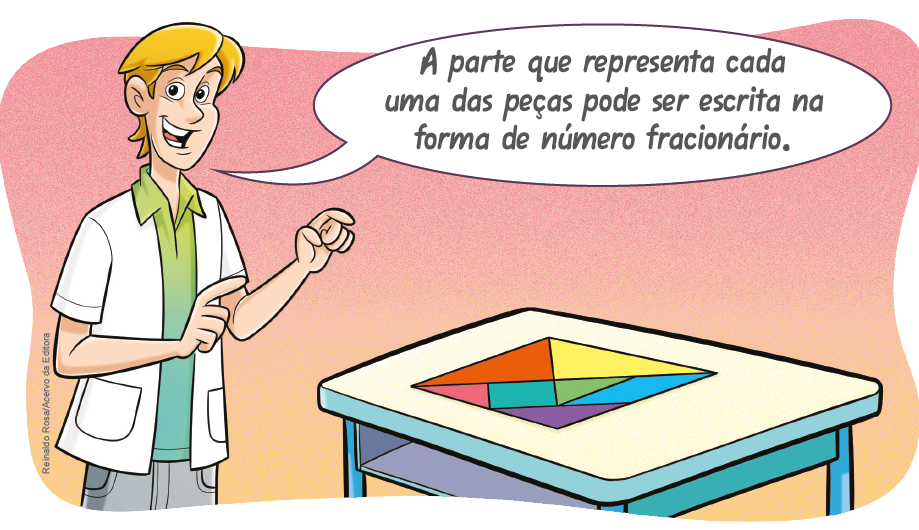
⟶ quantidade de partes consideradas (numerador)
⟶ número de partes iguais em que foi dividida a parte inteira
(denominador)
⟶ quantidade de partes consideradas (numerador)
⟶ número de partes iguais em que foi dividida a parte inteira
(denominador)
⟶ quantidade de partes consideradas (numerador)
⟶ número de partes iguais em que foi dividida a parte inteira
(denominador)
Nesse caso, as frações estão relacionadas à ideia de parte de um inteiro.
162
3. O Tangram é um jeito interessante e divertido de entendermos as frações. Com as peças do seu Tangram, monte as figuras a seguir e desenhe-as em seu caderno. Compartilhe o que montou com o seu colega.
Leitura de frações
Observe, no quadro abaixo, como é feita a leitura de algumas frações.
Quando o denominador for maior que 10 e não for uma potência de 10, lemos o numerador e o denominador seguido da palavra: avos.
Vejamos a seguir algumas situações na qual utilizamos as frações.
163
Situação 1
Marcelo e Carlos colecionam figurinhas do Campeonato Brasileiro de Futebol. Marcelo tem 48 figurinhas repetidas e resolveu dar 1/4 delas para Carlos. Quantas figurinhas ele deu para Carlos?
Vamos dividir a quantidade de figurinhas em 4 partes iguais.

Como 48 representa o todo e queremos apenas a quarta parte, temos:
de 48 é igual a 48 : 4 = 12
Portanto, Marcelo deu 12 figurinhas para Carlos.
Nesse caso, a fração está relacionada à ideia de divisão.
Situação 2
Caso Marcelo resolvesse dar das figurinhas, com quantas figurinhas Carlos ficaria?
Precisamos saber quanto representa de 48.
4
Como 48 representa o todo e este foi dividido em quatro partes iguais, sendo que três dessas partes correspondem às figurinhas que seriam dadas a Carlos, temos:
de 48 é igual a 48 : 4 ∙ 3 = 12 ∙ 3 = 36
4
Portanto, Carlos ficaria com 36 figurinhas.
164
Situação 3
Marcelo e Carlos ganharam de sua tia 3 barras de chocolate para que fossem divididas igualmente entre os dois. Qual a fração que representa a quantidade que cada um ganhou de chocolate?
Veja como as barras de chocolate serão divididas entre os dois garotos:
Logo, cada um recebeu 1 barra inteira mais de barra, ou ainda, cada um recebeu de barras de chocolate.
ENCONTRE SOLUÇÕES
1. Escreva, em seu caderno, como são 3. As figuras abaixo estão divididas em lidas as frações abaixo.
a)
b)
c)
d)
e)
f)
g)
h)
2. Em seu caderno, represente, por meio de desenhos, as frações a seguir.
a)
b)
c)
d)
3. As figuras abaixo estão divididas em partes iguais. Em seu caderno, escreva a fração correspondente à parte pintada de amarelo em cada uma das figuras.
![Exercício com 6 alternativas de figuras geométricas nas cores verde e amarela e nomeadas de a, b, c, d, e, f. Letra a: um triângulo dividido ao meio. À esquerda na cor amarela e à direita, na cor verde. Letra b: dois hexágonos. O primeiro na cor amarela, está dividido em seis partes, formando seis triângulos. O segundo, também dividido em seis partes. A parte superior dele, é amarela, A parte debaixo, são três triângulos. O da esquerda é verde, o do meio é amarelo e o da direita é verde. Letra c: um cilindro dividido em 3 partes. A de cima é amarela, a do meio verde e a base é amarela. Letra d: Dois retângulos divididos em seis partes, formando seis triângulos. O primeiro é amarelo. O segundo intercala as cores verde e amarela, começando com a cor verde. Letra e: Um paralelogramo dividido em 12 partes, sendo 3 linhas com quatro trapézios em cada linha. Na linha 1, a sequência de cores da esquerda para a direita é: amarela, verde, verde, verde. Na linha 2: verde, amarela, amarela, verde. Linha 3: amarela, verde, verde, amarela. Letra f: figura de um retângulo vazado no meio. Ele é formado por 16 cubos. As cores se intercalam em verde e amarela.](../../resources/images/verdeamar.PNG)
165
4. Nas embalagens de gelatina, encontramos informações sobre como prepará- la.
Modo de preparo
► Considerando que 1 litro corresponde a 1 000 mL, responda:
a) Qual é a fração do litro que corresponde à quantidade de água fervente necessária para o preparo?
b) Qual é a fração do litro que corresponde à quantidade total de água usada no preparo?
5. A ilustração a seguir mostra Francisco com seus amigos.
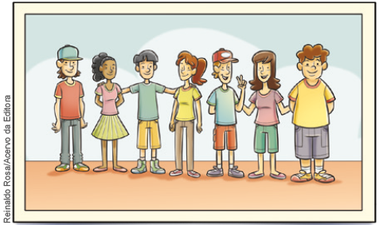► Observando o número de pessoas na fotografia, qual é a fração que representa a quantidade de:
a) meninas?
b) meninas que estão de saia?
c) meninos?
d) meninos que estão de bermuda?
e) pessoas com boné?
6. Para fazer 3 litros de suco de uva, a receita indica que, em uma jarra, devem ser adicionados 3 copos de suco concentrado e 6 copos de água, utilizando-se o mesmo copo.
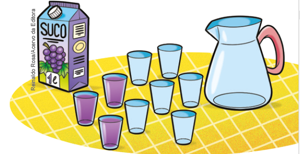a) Quantos copos equivalem a 3 litros de suco?
b) Depois de preparado, qual é a fração que representa a parte do suco concentrado?
c) Qual é a fração que representa a parte da água no suco preparado?
d) Se bebermos 2 copos do suco pronto, estaremos bebendo qual fração de todo o suco preparado?
e) Para preparar 1 litro desse suco, quantos copos de suco concentrado e quantos copos de água devem ser usados?
f) Se fosse feito 1 litro desse suco, qual fração representaria a parte do suco concentrado?
g) Se fossem preparados 2 litros desse suco, qual fração representaria a parte da água utilizada?
7. Em seu caderno, escreva a fração que representa:
a) 15 minutos de 1 hora
b) 2 dias de 1 semana
c) 7 meses de 1 ano
d) 25 dias de 1 ano
e)5 meses de 1 semestre
166
8. O instrumento utilizado para medir ângulos é o transferidor. Nos desenhos abaixo, identifique a medida de cada ângulo por meio do transferidor. Em seguida, represente a fração que indica essa medida em relação ao ângulo de 360º.
a)
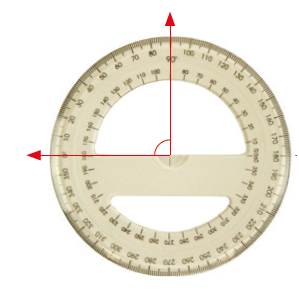b)
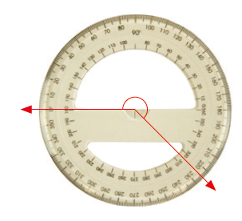b)
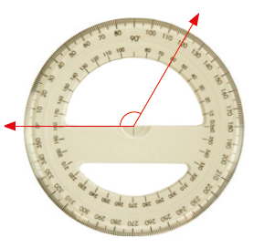d)
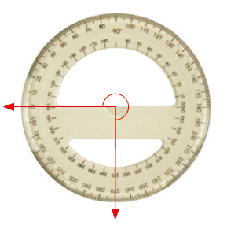9. No último dia de aula, apenas 3/4 dos alunos compareceram às aulas. Sabendo que a turma tem 36 alunos, quantos compareceram?
10. Em uma eleição para prefeito de uma cidade, o candidato vencedor obteve 59 dos votos. Votaram, nessa eleição, 4 500 eleitores. Quantos votos o candidato vencedor obteve?
11. Marta está pensando em comprar uma casa. O dinheiro de sua poupança será usado para dar entrada no imóvel e ela pretende financiar o restante da dívida. O valor de cada prestação não poderá ultrapassar 1/4 de seu salário. Sabendo que ela recebe mensalmente 1 280 reais, qual será o valor máximo de cada prestação?
12. A caixa d'água na casa de Vinícius está com 400 litros, que correspondem a 2/5 de sua capacidade. Qual a capacidade total dessa caixa d'água?
13. Na imagem a seguir temos um copo medidor indicando alguns produtos como açúcar e farinha, quantidade em gramas, que normalmente são usados para fazer um bolo.
► Em seu caderno, elabore um problema sobre frações utilizando a imagem como referência. Em seguida, troque seu caderno com um colega para que ele resolva o problema elaborado por você. Juntos, verifiquem se os problemas resolvidos estão corretos.
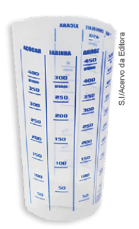167
14. (OBMEP) Três frascos, todos com capacidade igual a 1 litro, contêm quantidades diferentes de um mesmo líquido, conforme ilustração ao lado. Qual das al-ternativas melhor expressa, aproximadamente, o volume de líquido contido nos frascos A, B e C, nesta ordem?

a) , ,
b) , ,
c) , ,
d) , ,
e) , ,
168
Números mistos
Renato e Júlio são irmãos e ganharam duas barras de chocolate de uma tia. Veja a parte que eles comeram no dia em que ganharam o chocolate.
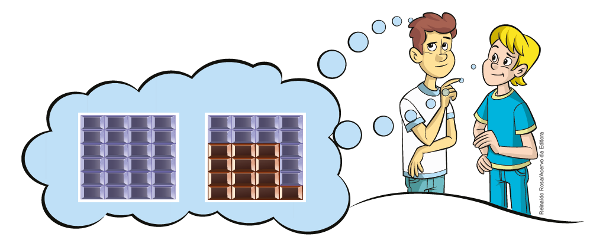Eles comeram, juntos, 1 barra inteira e da segunda barra.
Podemos indicar a quantidade que eles comeram por meio da fração ou ainda pelo número misto 1().
= 1( )
Às vezes, precisamos transformar um número misto em forma de fração. Veja como podemos transformar, no caso, em 1().
Observe nos desenhos a representação da parte que os dois irmãos comeram da barra.
1 barra inteira ou da barra
da barra
Portanto, eles comeram mais das barras de chocolate, ou seja, .
Também podemos fazer o caminho inverso, transformar a fração em um número misto. Note que, nesse caso, o numerador é maior que o denominador.
Observe:
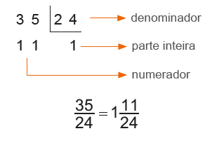Atenção!
► Frações próprias são aquelas cujo numerador é menor do que o denominador. Exemplo:
► Frações impróprias são aquelas cujo numerador é maior do que o denominador. Exemplo:
► Frações aparentes são aquelas cujo numerador é um múltiplo do denominador. Exemplo:
169
1. Em seu caderno, represente por meio de desenhos, as frações abaixo.
a)
b)
c)
d)
2. Em seu caderno, transforme os números mistos a seguir em frações.
a) 4.
b) 3.
c) 1.
d) 5.
3. Em seu caderno, transforme as frações a seguir em números mistos.
a)
b)
c)
d)
4. Luciana comprou 2 caixas com 6 lentes de contato descartáveis cada uma. Nessas condições, represente, por meio de fração, a quantidade de lentes usadas em cada situação.
a) Depois de 2 meses, Luciana usou 4 lentes de uma caixa.
b) Depois de 5 meses, Luciana já havia usado 1 caixa inteira e mais 2 lentes da outra caixa.
Frações equivalentes
Marcela recortou algumas fichas, todas do mesmo tamanho, porém com divisões e cores diferentes. Observe a ilustração ao lado.
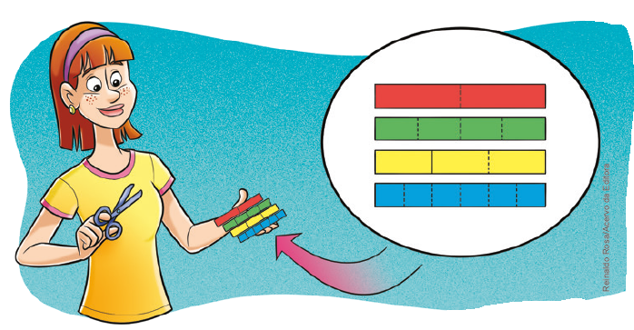1. Agora, para compreender o que são frações equivalentes, troque ideias com um colega, comparem as fichas que Marcela recortou e, em seus cadernos, respondam às questões a seguir.

a) Quantas partes verdes são necessárias para compor uma parte vermelha?
b) Que fração representa cada parte da ficha vermelha?
c) Que fração representa 2 partes da ficha verde?
d) Duas partes verdes são equivalentes a uma parte vermelha? Por quê?
170
e) Quantas partes azuis são necessárias para compor duas partes amarelas?
f) Que fração representa 2 partes da ficha amarela?
g) Que fração representa 4 partes da ficha azul?
h) Quatro partes azuis são equivalentes a duas partes amarelas? Por quê?
Quando duas ou mais frações representam a mesma parte do todo, elas são chamadas de frações equivalentes.
![Desenho de um par de barras horizontais na cor amarela e de tamanho igual. Na primeira barra, ela foi dividida em 3 partes, sendo o primeiro quadrante destacado de amarelo. À direita da barra, a fração 1/3. Na segunda barra, ela foi dividida em seis partes. No desenho estão destacados os dois primeiros quadrantes da barra 2. À direita, a fração 2/6. Mais à direita do par de barras: a expressão 1/3 igual a 2/6. Uma flecha em cima do 1/3 em direção ao 2/6 com a expressão em cima 1 vezes 2. Uma outra flecha abaixo do 1/3 em direção ao 2/6 com a expressão 2 vezes 6.](../../resources/images/barraAm.PNG)
![Desenho de um par de barras horizontais na cor verde e de tamanho igual. Na primeira barra, ela foi dividida em 5 partes, sendo os três primeiros quadrantes destacados de verde. À direita da barra, a fração 3/5. Na segunda barra, ela foi dividida em dez partes. No desenho estão destacados os seis primeiros quadrantes. À direita, a fração 6/10. Mais à direita do par de barras: a expressão 3/5 igual a 6/10. Uma flecha em cima do 3/5 em direção ao 6/10 com a expressão em cima 3 vezes 2. Uma outra flecha abaixo do 3/3 em direção ao 6/10 com a expressão 5 vezes 2.](../../resources/images/barraVe.PNG)
Para obter uma fração equivalente a uma fração dada, multiplicamos o numerador e o denominador por um mesmo número natural, diferente de 0 (zero).
Simplificação de frações
Algumas frações podem ser escritas de maneira mais simples, ou seja, podem ser simplificadas. Nesse caso, podemos encontrar uma fração equivalente, com numerador e denominador menores.
![Dentro de um retângulo laranja, esquema com a expressão 48/36 igual 24/18 igual 12/9 = 4/3. Acima da expressão: uma flecha liga o número 48 ao 24 com a expressão acima: dividido por dois. Outra flecha liga 24 ao 12 com a expressão dividido por dois. Uma outra flecha liga 12 ao 4 com a expressão dividido por 3. Abaixo, o mesmo: uma flecha liga o número 36 ao 18 com a expressão abaixo: dividido por dois. Outra flecha liga 18 ao 9 com a expressão dividido por dois. Uma outra flecha liga 9 ao 3 com a expressão dividido por 3.](../../resources/images/laran.PNG)
Para isso, basta dividirmos, sucessivamente, o numerador e o denominador por um mesmo número natural, diferente de 0 (zero).
Quando não podemos mais simplificar uma fração, dizemos que ela é uma fração irredutível, ou seja, quando o único divisor comum do numerador e do denominador é 1.
171
ENCONTRE SOLUÇÕES
a) , com denominador igual a 48;
b) , com numerador igual a 27;
c) , com numerador igual a 52;
d) , com denominador igual a 55.
2. Em seu caderno, continue as sequências abaixo, escrevendo as três próximas frações equivalentes.
a) , ,
b) , ,
c), ,
d), ,
3. Dadas as seguintes frações, quais são irredutíveis?
a)
b)
c)
d)
4. Observe o quadro a seguir.
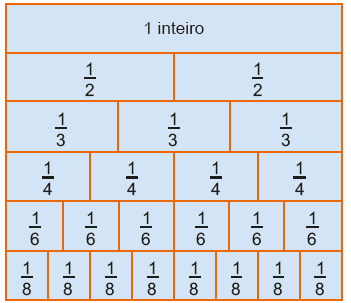► Agora, em seu caderno, escreva uma fração equivalente a:
a)
b)
c)
d)
5. Nas sequências abaixo, identifique a fração que não é equivalente à fração dada e copie-a no caderno.
a) → , ,
b) → , ,
c) → , ,
c) → , ,
6. Observe a figura atentamente e, depois, responda às questões.
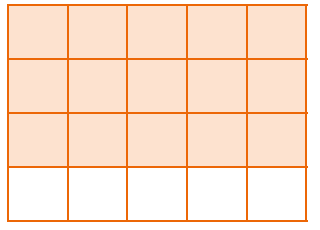a) Que fração representa a parte colorida da figura?
b) Qual é a forma irredutível dessa fração?
7. Em seu caderno, simplifique as frações até obter a forma irredutível.
a)
b)
c)
d)
e)
f)
8. Qual a fração irredutível equivalente a ?
172
9. Observe o mosaico abaixo e responda às questões.
![Mosaico em perspectiva nas cores cinza e azul. O mosaico pode ser dividido em cinco linhas. Linha 1, na cor cinza, da esquerda para a direita: um triângulo cortado ao meio, sequência de quatro triângulos e mais um triângulo cortado ao meio. Linha 2: na cor azul, sequência de cinco losangos. Linha 3: na cor cinza, um triângulo, sequência de quatro losangos e outro triângulo. Linha 4: na cor azul, sequência de cinco losangos. Linha 5: na cor cinza, um triângulo cortado ao meio, sequência de quatro triângulos e mais um triângulo cortado ao meio.](../../resources/images/chade.PNG)
a) Que fração representa a parte pintada de cinza? Escreva-a na forma irredutível.
b) Que fração representa a parte pintada de azul? Escreva-a na forma irredutível.
10. Escreva a fração irredutível que representa:
a) os 2 primeiros meses em relação a 1 ano;
b) os 15 primeiros dias do mês de abril;
c) 1 trimestre em relação a 1 ano;
d) 1 quinzena em relação a 1 mês;
e) 15 minutos em relação a 1 hora;
f) 10 horas em relação a 1 dia;
g) 24 horas em relação a 5 dias;
h) 45º em relação a 360º;
i) 30º em relação a 270º.
11. (OBMEP) A figura mostra um retângulo formado por 18 quadrados iguais com algumas partes sombreadas. Qual fração da área do retângulo é sombreada?
![Mosaico formado por 18 quadrados, distribuídos nas cores azuis e sombreados. São nove quadrados na primeira linha e outros nove na segunda. Na primeira linha, da esquerda para a direita: o primeiro quadrado é cortado na diagonal: metade sombreado, metade azul. O segundo quadrado é azul. O terceiro quadrado é cortado na diagonal: metade azul, metade sombreado. O quarto quadrado é cortado na diagonal: metade sombreado, metade azul. O quinto quadrado é azul. O sexto quadrado é cortado na diagonal: metade azul, metade sombreado. O sétimo quadrado é azul. O oitavo quadrado é cortado na diagonal: metade azul, metade sombreado. O nono quadrado é sombreado. Na segunda linha, da esquerda para a direita: o primeiro quadrado é cortado na diagonal: metade sombreado, metade azul. O segundo quadrado é azul. O terceiro quadrado é cortado na diagonal: metade azul, metade sombreado. O quarto quadrado é cortado na diagonal: metade sombreado, metade azul. O quinto quadrado é azul. O sexto quadrado é cortado na diagonal: metade azul, metade sombreado. O sétimo quadrado é cortado na diagonal: metade azul, metade sombreado. O oitavo quadrado é sombreado. O nono quadrado é sombreado.](../../resources/images/qud2.PNG)
a)
b)
c)
d)
e)
12. (OBMEP) A figura mostra um quadrado dividido em 16 quadradinhos iguais. A área em preto corresponde a que fração da área do quadrado?
a)
b)
c)
d)
e)
![Figura de um mosaico formado por 16 quadrados, distribuídos nas cores branca e preta, em quatro linhas e quatro colunas. As partes em preto formam o desenho de um catavento. Linha 1, da esquerda para a direita: Quadrado branco. Quadrado branco. Quadrado cortado ao meio em diagonal, metade preto, metade branco. Quadrado branco. Linha 2: Quadrado cortado ao meio em diagonal, metade branco, metade preto. Quadrado cortado ao meio em diagonal, metade preto, metade branco. Quadrado cortado ao meio em diagonal, metade preto, metade branco. Quadrado branco. Linha 3: Quadrado branco. Quadrado cortado ao meio em diagonal, metade branco, metade preto. Quadrado cortado ao meio em diagonal, metade branco, metade preto. Quadrado cortado ao meio em diagonal, metade preto, metade branco. Linha 4: Quadrado branco. Quadrado cortado ao meio em diagonal, metade branco, metade preto. Quadrado branco. Quadrado branco.](../../resources/images/qud3.PNG)
173
Comparação entre números fracionários
Comparação entre frações com denominadores iguais
Fernando e sua turma pediram 3 pizzas médias
para o jantar.

Reinaldo Rosa/Acervo da Editora
A pizza de atum foi cortada em 8 pedaços iguais.
Fernando comeu 3 da pizza, Marcos comeu 1 e Carmem da pizza, Marcos comeu e Carmem, .
Quem comeu mais pizza?
Para responder a essa pergunta, podemos fazer um desenho que representa a quantidade de fatias em que a pizza foi dividida e comparar a quantidade de fatias que cada um comeu.
Ou ainda, podemos comparar as três frações e verificar qual delas representa a maior quantidade de fatias.
Como todos comeram fatias de mesmo tamanho, a fração que representa a maior quantidade de fatias é aquela que tem o maior numerador.
Portanto, quem comeu mais pizza foi o Fernando.
Quando duas ou mais frações têm o mesmo denominador, a maior delas é a que apresenta o maior numerador.
174
Comparação entre frações com numeradores iguais
A pizza de milho foi cortada em várias fatias, todas de tamanhos diferentes.
Juliana comeu da pizza e Caio, . Quem comeu a maior fatia?
Para saber quem comeu mais fatias podemos fazer um desenho da pizza e representar o equivalente a e do tamanho total. Veja no desenho ao lado.
Comparando o tamanho das fatias é fácil perceber quem comeu mais.
Tomando dois inteiros de mesmo tamanho, vamos representar e nos desenhos e compará-los:
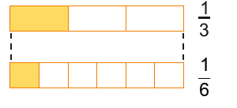>
Ao dividirmos dois inteiros em partes iguais, a maior parte será do inteiro que foi dividido em um menor número de partes.
Como no caso da pizza cada um comeu um pedaço, significa que foram to-madas quantidades de partes iguais do inteiro, ou seja, cada um pegou uma parte.
Logo, quem comeu mais foi Caio.
Também podemos comparar as frações. Sabemos que os tamanhos das fatias são diferentes e que os dois amigos comeram uma fatia cada um. Para comparar as frações que representam cada fatia comida e descobrir qual delas representa a maior, temos de comparar os denominadores. O menor denominador indica a maior fatia, pois mostra que o inteiro foi dividido em um número menor de partes.
Quando duas ou mais frações têm o mesmo numerador, a maior delas é a fração com o menor denominador.
175
Comparação entre frações com numeradores e denominadores diferentes
Júlio e Carlos comeram somente a pizza de rúcula. Júlio comeu e Carlos, . Quem comeu mais?
Da mesma forma que nas situações anteriores, podemos representar a situação por meio de um desenho, observe:
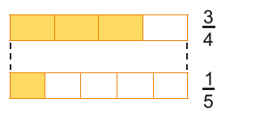Ou ainda, para saber qual fração representa a maior quantidade de pizza, precisamos determinar frações equivalentes a cada uma delas, de forma que essas frações tenham o mesmo denominador.
O novo denominador deve ser múltiplo de 4 e 5. Por isso, vamos obter o mmc entre 4 e 5.
mmc (4, 5) = 20
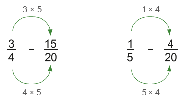Comparando as frações e , temos que representa a maior quantidade de pizza. Portanto, é maior que .
Foi Júlio quem comeu mais pizza.
As frações e possuem outras frações que são equivalentes e que apresentam um denominador comum. Por uma questão de facilidade do cálculo, calculamos o mínimo múltiplo comum que representa o menor denominador comum.
Quando duas ou mais frações apresentam numerador e denominador diferentes, devemos encontrar frações equivalentes a elas que tenham o mesmo denominador. A maior fração será aquela que tiver o maior numerador.
176
ENCONTRE SOLUÇÕES
1. Joana bebeu de uma garrafa de suco e Júlia bebeu da mesma garrafa. Quem bebeu mais suco?2. Três amigos gostam muito de chocolate e cada um deles tem uma barra, todas de mesmo tamanho. O primeiro comeu de sua barra, o segundo comeu e o terceiro . Qual dos três comeu menos chocolate?
3.Observe os pares de desenhos e escreva, em seu caderno, as frações que correspondem à região colorida. Em seguida, utilizando os sinais >, < ou =, compare- as.
a)
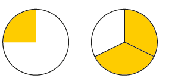b)
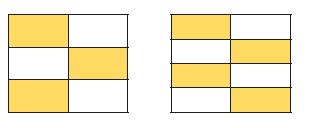c)
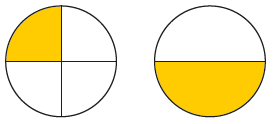d)
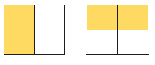e)
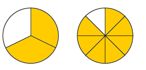4. Para se ecercitar, Juca e Mário se deslocaram de bicicleta da cidade onde moram até a cidade vizinha. Em determinado domingo, Juca percorreu do percurso e Mário . Quem percorreu o maior trajeto?
5. Escreva, em seu caderno, as frações abaixo em ordem crescente.
,,,
6.Escreva, em seu caderno, as frações a seguir em ordem decrescente.,,,
7. Na escola em que Luís estuda, fizeram uma pesquisa para saber qual a preferência dos alunos quanto ao gênero dos filmes. Veja a seguir o resultado dessa pesquisa.►dos alunos preferem ficcão cientifica;
►dos alunos preferem aventura;
►dos alunos preferem comédia.
a) Com base na pesquisa, qual é o gênero de filme mais preferido?
b) Com base na pesquisa, qual é o gênero de filme menos preferido?